전산회계운용사-1급 (2015-10-03 기출문제)
1과목: 재무회계
1. 재무회계개념체계에서 제시한 재무제표의 목적으로 옳지 않은 것은?
- 광범위한 정보이용자의 경제적 의사결정에 유용한 정보제공
- 재무보고목적 달성에 유용한 재무회계의 기초개념 제공
- 장래 통제하게 될 가능성이 높은 경제적 자원의 잠재적 변동 가능성을 평가하는데 유용한 정보 제공
- 기업의 현금 및 현금성자산의 창출능력과 그 시기 및 확실성에 대한 평가에 유용한 정보 제공
(정답률: 알수없음)

2. 회계거래를 기재하는 방식 중 3전표제에 대한 설명으로 옳지 않은 것은?
- 3전표제란 거래를 현금 수반 여부에 따라 현금거래와 대체 거래로 구분하여 사용하는 방식을 말한다.
- 입금거래의 차변계정과목은 항상 현금이므로 입금전표 상에는 대변계정과목만을 기입한다.
- 출금전표는 1표 1과목제이므로 상대계정과목이 2개 이상인 거래는 차변계정 과목수에 맞추어 전표를 작성한다.
- 출금전표는 현금의 수입이나 지출이 발생하지 않는 거래에 사용한다.
(정답률: 알수없음)
3. (주)전산의 2015년도 포괄손익계산서상 당기순이익은 ￦80,000이다. 다음은 전기 말에 비하여 증감된 자산·부채와 당기에 발생된 비용이다. 이 경우 현금흐름표상의 영업활동으로 인한 현금흐름은 얼마인가? (단, 영업활동 현금흐름 산정방법은 간접법에 의한다.)
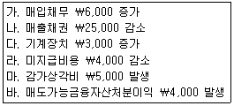
- ￦1⑤,000
- ￦108,000
- ￦112,000
- ￦115,000
(정답률: 알수없음)
4. 한국채택국제회계기준 제1007호에 따른 현금및현금성자산에 대한 설명 중 옳지 않은 것은?
- 현금성자산은 투자나 다른 목적이 아닌 단기의 현금수요를 충족하기 위한 목적으로 보유한다.
- 투자자산은 일반적으로 만기일이 3개월 이내에 도래하는 경우에만 현금성자산으로 분류한다.
- 모든 지분상품은 현금성자산에 포함한다.
- 현금및현금성자산을 구성하는 항목 간 이동은 현금관리의 일부이므로 이러한 항목간의 변동은 현금흐름에서 제외한다.
(정답률: 알수없음)
5. 한국채택국제회계기준에 따른 금융자산의 재분류와 관련된 내용 중 옳지 않은 것은?
- 단기매매금융자산으로 분류된 지분증권이 시장성을 상실하면 매도가능금융자산으로 재분류할 수 있다.
- 매도가능금융자산을 당기손익인식금융자산으로 분류변경할 수 있다.
- 만기보유금융자산은 매도가능금융자산으로 분류하는 것만 허용된다.
- 매도가능금융자산을 만기보유금융자산으로 분류변경할 수 있다.
(정답률: 알수없음)
6. 투자부동산은 기업이 보유하고 있는 자가사용부동산과 다르게 독립적으로 현금흐름을 창출한다. 다음에서 투자부동산으로 분류할 수 있는 것은?
- 정상적인 영업과정에서 판매하기 위한 부동산
- 공장으로 사용하고 있는 부동산
- 금융리스를 통해 보유하면서 운용리스로 제공하고 있는 건물
- 제3자를 위하여 건설 또는 개발 중인 부동산
(정답률: 알수없음)
7. 다음은 2015년 9월 한 달 동안의 상공회사의 자료이다. 대손상각 액을 외상매출금 계정에서 직접 차감할 경우 9월 한 달 동안의 총매출은 얼마인가?
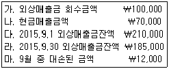
- ￦141,000
- ￦143,000
- ￦157,000
- ￦168,000
(정답률: 알수없음)
8. 회사는 보유 중인 매출채권을 금융기관에 양도하였다. 다음 중양도한 매출채권을 제거할 수 없는 경우는?
- 양도자가 양수자에게 발생가능성이 높은 대손의 보상을 보증하면서 단기 수취채권을 매도한 경우
- 양도자가 매도한 매출채권을 재매입시점의 공정가치로 재매 입할 수 있는 권리를 보유하고 있는 경우
- 양도자가 매도한 매출채권에 대한 콜옵션을 보유하고 있지만, 당해 콜옵션이 깊은 외가격 상태이기 때문에 만기 이전에 당해 옵션이 내가격 상태가 될 가능성이 매우 낮은 경우
- 매출채권의 소유와 관련된 위험과 보상의 대부분을 보유하지도 아니하고 이전하지도 아니하였지만, 당해 매출채권에 대한 통제권을 상실한 경우
(정답률: 알수없음)
9. 회계상 계정과목에 대한 설명 중 옳지 않은 것은?
- 선급금이란 매입처에 대하여 상품·원재료의 매입을 위하여 또는 제품의 외주가공을 위하여 선급한 금액을 말한다.
- 상품 등을 주문받고 거래처로부터 미리 받은 계약금은 선수금에 해당된다.
- 가지급금은 재무상태표에 명시적으로 언급되어야 하는 확정 채권을 표시하는 과목이다.
- 가수금은 실제 현금의 수입은 있었지만 거래의 내용이 불분명하거나 거래가 완전히 종결되지 않아 계정과목이나 금액이 미확정인 경우에, 현금의 수입을 일시적인 채무로 표시하는 계정과목이다.
(정답률: 알수없음)
10. (주)대한이 2015년도 기말상품에 적용되는 원가흐름의 가정을 기존의 방법에서 새로운 방법으로 변경한다면 기말상품의 장부 금액이 100원만큼 상승하게 된다. 이러한 영향으로 적절하지 않은 것은?
- 2015년도 매출원가가 100원만큼 하락하게 된다.
- 2016년도 기초상품은 100원만큼 상승하게 된다.
- 2015년도 당기순이익은 100원만큼 하락하게 된다.
- 2015년 말의 재무상태표에는 자산이 100원만큼 상승하게 된다.
(정답률: 알수없음)
11. 다음 자료에 근거한 기말 재무상태표상에 기록되는 재고자산의 장부금액은 얼마인가?
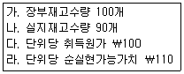
- ￦9,000
- ￦9,900
- ￦10,000
- ￦11,000
(정답률: 알수없음)
12. 유형자산의 감가상각에 대한 설명이다. 옳지 않은 것은?
- 유형자산을 구성하는 일부의 원가가 당해 유형자산의 전체 원가에 비교하여 유의적이라면, 해당 유형자산을 감가상각할 때 그 부분은 별도로 구분하여 감가상각한다.
- 유형자산의 원가는 그 유형자산을 구성하고 있는 유의적인 부분에 배분하여 각 부분별로 감가상각한다.
- 유형자산의 전체원가에 비교하여 해당 원가가 유의적이지 않은 부분은 반드시 함께 감가상각하여야 한다.
- 각 기간의 감가상각액은 일반적으로 당기손익으로 인식한다. 그러나 유형자산에 내재된 미래경제적효익이 다른 자산을 생산하는 데 사용되는 경우도 있다. 이 경우 유형자산의 감가상각액은 해당 자산의 원가의 일부가 된다.
(정답률: 알수없음)
13. 무형자산의 회계처리에 대한 설명으로 옳지 않은 것은?
- 무형자산의 실제 잔존가치가 해당 자산의 장부금액과 같거나 큰 경우에도, 전년도와 동일한 방법으로 계속 상각해야 한다.
- 무형자산의 상각은 자산이 사용 가능한 때부터 합리적 기간 동안 상각한다.
- 무형자산의 상각방법으로 정액법 이외의 방법을 사용할 수 있다.
- 내부적으로 창출한 영업권은 무형자산으로 인식하지 않는다.
(정답률: 알수없음)
14. 전환사채에 대한 설명으로 옳지 않은 것은?
- 전환사채란 유가증권의 소유자가 일정한 조건하에 전환권을 행사할 수 있는 사채이다.
- 권리를 행사하면 보통주로 전환된다.
- 전환사채는 사채와 주식의 성격을 모두 가지고 있다.
- 일반적으로 전환사채는 사채 발행시점에 자본으로 처리한다.
(정답률: 알수없음)
15. 재무상태표 자본항목 중 차후에 포괄손익계산서에 영향을 주는 항목은?
- 주식발행초과금
- 자기주식처분손실
- 감자차익
- 매도가능금융자산평가이익
(정답률: 알수없음)
16. (주)대한의 당기순이익은 ￦12,000,000이고, 기초에 유통 중인 보통주식은 1,200주이며, 7월 1일 자기주식 400주를 취득하였다. 가중평균유통보통주식수를 편의상 월할계산하면 (주)대한의 기본 주당순이익은 얼마인가?
- ￦7,500
- ￦10,000
- ￦12,000
- ￦15,000
(정답률: 알수없음)
17. 기타장기종업원급여에 대한 설명 중 옳지 않은 것은?
- 기타장기종업원급여에 단기종업원급여, 퇴직급여 및 해고 급여는 제외된다.
- 종업원이 관련 근무용역을 제공하는 연차보고기간말 이후 12개월 이전에 전부 결제될 것으로 예상되는 경우로 한다.
- 장기근속휴가나 안식년휴가와 같은 장기유급휴가, 그 밖의 장기근속급여, 장기장애급여 등의 급여가 포함된다.
- 기타장기종업원급여를 측정할 때 나타나는 불확실성이 크지 않으므로 재측정요소를 기타포괄손익으로 인식하지 않는다.
(정답률: 알수없음)
18. (주)전산은 사업개시연도인 2015년도에 법인세비용차감전순이익 으로 ￦200,000을 보고하였다. 세무상 과세소득은 일시적 차이 (손금항목) ￦50,000과 접대비로 인해 재무회계와 세무회계 간에 나타나는 차이(익금항목) ￦20,000으로 인하여 ￦170,000이다. 당기 및 차기의 법인세율이 30％일 경우 나타나는 이연법인세 금액으로 옳은 것은?
- 이연법인세자산 ￦9,000
- 이연법인세자산 ￦15,000
- 이연법인세부채 ￦9,000
- 이연법인세부채 ￦15,000
(정답률: 알수없음)
19. 다음은 회계변경과 오류수정에 관한 설명이다. 옳지 않은 것은?
- 회계변경의 속성상 회계정책의 변경과 회계추정의 변경을 구분하기 어려운 경우에는 이를 회계추정의 변경으로 본다.
- 오류가 발견된 경우에는 항상 재무제표의 정보이용자를 위하여 특정기간에 미치는 영향과 오류의 누적효과를 계산한 후 재무제표를 소급하여 재작성하여야 한다.
- 추정의 근거가 되었던 상황의 변화, 새로운 정보의 획득, 추가적인 경험의 축적이 있는 경우 새로운 추정치를 당기와 미래의 재무제표에 반영한다.
- 회계정책을 변경하는 경우 계속성의 원칙이 훼손될 수 있다.
(정답률: 알수없음)
20. 상품매매업을 영위하는 (주)상공의 구매담당자가 회계연도 말 잠적하였다. 회사는 상품구매 시 전액 현금결제하고 있으며, 매출은 모두 외상매출이다. 장부상 당기매입액은 ￦138,000으로 계상되어 있다. 다음의 자료로 기말재고자산을 추정하면 얼마인가?
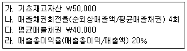
- ￦30,000
- ￦40,000
- ￦50,000
- ￦60,000
(정답률: 알수없음)
2과목: 원가관리회계
21. 다음 중 계정분류법에 의한 원가추정으로 옳지 않은 것은?
- 부재료 사용량이 생산중량에 비례해서 변동한다면, 지난달에 비해 생산중량이 감소한 경우 부재료 사용량도 감소했을 것이다.
- 생산설비에 대한 감가상각비가 생산량에 따라서 비례하지 않는다면, 지난달에 비해 생산량이 증가한 경우에도 감가상각비는 증가하지 않을 것이다.
- 복리후생비가 인원수에 비례해서 변동한다면, 지난달에 비해 인원수가 변동이 없는 경우 복리후생비도 변동이 없을 것이다.
- 전력비가 생산량에 비례해서 변동하지 않는다면, 지난달에 비해 생산량이 증가한 경우 전력비가 비례해서 증가했을 것이다.
(정답률: 알수없음)
22. 다음은 (주)상공의 제조원가명세는 다음과 같다. 당기제품제조 원가는 얼마인가?
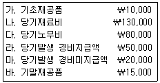
- ￦210,000
- ￦235,000
- ￦255,000
- ￦275,000
(정답률: 알수없음)
23. 다음 중 자산과의 관련성에 따른 원가의 분류에 대한 설명으로 옳지 않은 것은?
- 원가는 자산화여부에 따라 제품원가와 기간비용으로 구분할 수 있다.
- 고정제조간접비는 제조원가로서 재무보고를 위한 원가계산 에서는 제품원가에 포함된다.
- 제품원가는 매입이나 제조과정에서 발생한 원가들로 발생한 시점에는 비용으로 처리하였다가 판매 시점에 재고자산의 원가를 구성한다.
- 광고선전비, 판매수수료, 사무원급여 등 판매관리비는 대표 적인 기간비용에 해당한다.
(정답률: 알수없음)
24. 다음은 원가의 개념과 관련된 내용들이다. 그 내용이 옳지 않은 것은?
- 원가(cost)란 특정 목적을 달성하기 위하여 발생하거나 잠재적으로 발생할 경제적 희생을 화폐적으로 측정한 것을 의미한다.
- 원가 중에서 미소멸된 부분을 자산이라고 하고, 소멸된 원가 중에서 수익의 실현에 기여한 부분은 비용(expense), 수익의 실현에 기여하지 못한 부분을 손실(loss)이라고 한다.
- 판매관리비는 각 기간별로 자원이 즉각적으로 사용되므로 재고가능원가(inventoriable cost)가 아닌 재고불가능원가 (non-inventoriable cost)로 분류된다.
- 직접원가와 간접원가는 원가의 행태(cost behavior)에 따른 분류이다.
(정답률: 알수없음)
25. 다음 중 재료비에 관한 설명으로 옳지 않은 것은?
- 원재료 계정은 외부로부터 매입한 재료를 처리하는 계정으로 당기에 원재료를 구입한 경우에는 차변에 기입한다.
- 원재료 계정은 제조활동에 사용될 직접재료와 간접재료를 동시에 기록하는 계정이다.
- 특정제품을 생산하기 위하여 당기 제조과정에 투입된 원재료 소비액은 기초재고액에서 당기매입액을 차감하고 기말재고 액을 가산하여 계산한다.
- 기업에 따라서는 원재료계정을 직접재료는 직접재료계정에 기록하고, 간접재료는 소모품 등 별도의 계정에 각각 기록 하는 경우도 있다.
(정답률: 알수없음)
26. (주)상공은 정상원가계산(normal costing)을 사용하며, 아래의 T-계정은 2015년 1년 동안의 제조간접원가 계정으로서 배부차이를 조정하기 직전 기록이다. 회사는 제조간접원가 배부차이를 매출 원가에서 조정하고 있다. 배부차이를 조정하기 위해 필요한 분개는? (단, (주)상공은 제조간접원가의 실제발생이나 예정배부의 계정과목을 제조간접원가로 같이 사용하고 있다.)
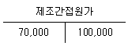
- (차) 매출원가 30,000 (대) 제조간접원가 30,000
- (차) 매출 30,000 (대) 매출원가 30,000
- (차) 매출원가 30,000 (대) 매출 30,000
- (차) 제조간접원가 30,000 (대) 매출원가 30,000
(정답률: 알수없음)
27. 정상원가계산에서는 제조간접비를 예정배부하고 기말에 실제 발생액과 조정한다. 이와 같이 정상원가계산에서 제조간접비를 예정배부하는 이유로 옳지 않은 것은?
- 예정배부 대상이 되는 기간의 실제조업도를 측정하기 어려워서
- 제품원가계산을 신속히 하기 위해
- 월별계절별로 제조간접비가 크게 변동하는 경우 제품의 단위당 원가가 변동되는 것을 방지하기 위해
- 월별계절별로 제조간접비의 배부기준이 되는 조업도가 크게 변동하는 경우 제품의 단위당 원가가 변동되는 것을 방지하기 위해
(정답률: 알수없음)
28. 다음 중 개별원가계산의 일반적 절차를 그 순서대로 가장 올바르게 배열한 것은 어느 것인가?
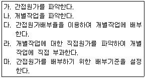
- 가 - 나 - 마 - 다 - 라
- 나 - 다 - 가 - 라 - 마
- 나 - 라 - 가 - 마 - 다
- 마 - 나 - 다 - 라 - 가
(정답률: 알수없음)
29. 다음은 종합원가계산시스템을 채택하고 있는 어느 한 부문의 자료 이다. 재료비는 공정초기에 모두 발생하며, 가공비는 공정전체 에서 균일하게 발생한다. 평균법에 의하여 재료비와 가공비의 완성품환산량을 계산하면 얼마인가?
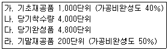
- 재료비(5,000단위), 가공비(4,900단위)
- 재료비(4,000단위), 가공비(4,900단위)
- 재료비(5,000단위), 가공비(4,500단위)
- 재료비(4,000단위), 가공비(4,500단위)
(정답률: 알수없음)
30. 다음 중 종합원가계산에 대한 설명으로 옳지 않은 것은?
- 선입선출법은 기초재공품이 먼저 완성된 것으로 가정하여 기초재공품원가는 모두 완성품에 포함시키고 당기발생원가를 완성품과 기말재공품에 배분한다.
- 선입선출법에 의한 완성품환산량은 평균법에 의한 완성품 환산량보다 항상 크거나 같다.
- 선입선출법은 평균법보다 전기와 당기의 성과가 더 명확하다.
- 제조원가보고서를 작성하는 주된 목적은 공정별로 완성품 원가와 기말재공품원가를 정확히 계산하는 것이다.
(정답률: 알수없음)
31. (주)상공의 다음 자료에 의하여 선입선출법에 의한 가공비의 완성품 환산량 단위 당 원가는 얼마인가?
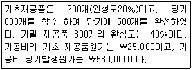
- ￦828
- ￦725
- ￦1,000
- ￦1,120
(정답률: 알수없음)
32. 다음 자료에 의하여 (주)상공의 평균법에 의한 완성품원가와 기말 재공품원가는 얼마인가?
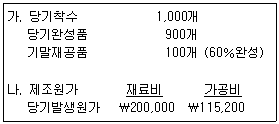
- (완성품원가) ￦278,000 (기말재공품원가) ￦27,200
- (완성품원가) ￦288,000 (기말재공품원가) ￦27,200
- (완성품원가) ￦278,000 (기말재공품원가) ￦25,200
- (완성품원가) ￦288,000 (기말재공품원가) ￦25,200
(정답률: 알수없음)
33. (주)한강은 표준원가계산제도를 도입하였다. (주)한강의 고정제조 간접비 실제 발생액은 46,000원이며, 고정제조간접비 예산차이 (소비차이)는 6,000원 불리한 것으로 분석되었다. 또한 고정제조 간접비 조업도차이는 10,000원 불리한 것으로 분석되었다. (주) 한강의 고정제조간접비 표준원가는 제품생산량당 2시간, 시간당 5원이다. 실제로 3,000개의 제품을 생산하였다. (주)한강의 기준조업도를 구하면?
- 4,000시간
- 6,000시간
- 8,000시간
- 10,000시간
(정답률: 알수없음)
34. 표준원가계산제도하에서 재료비 차이에 관한 내용이다. 옳지 않은 것은?
- 사용시점에 원가차이를 분리하는 것은 원재료가 재공품계정에 투입되기 이전에 원가차이를 분리하는 것을 의미한다.
- 구입시점에 가격차이를 분리하는 것은 원재료계정 이전에 원가차이를 계산하는 것을 의미하며 구입가격차이를 계산 하는 것을 말한다.
- 재료비 차이가 불리하다는 것은 실제 재료비가 표준원가보다 더 많이 발생하였다는 것을 의미하며 이러한 불리한 차이는 차변에 기록된다.
- 생산부서의 생산수량 차이와 관계없이 구매부서의 성과평가는 오로지 재료비 구입가격차이로만 이루어져야 한다.
(정답률: 알수없음)
35. (주)대한은 의류제품에 들어가는 부품을 생산하는 기업으로 표준 원가계산을 사용하고 있다. 최종 완제품 1단위는 원단 2m의 직접재료가 필요하다. 제조과정에 투입된 직접 재료 원단의 20％는 파손되거나 손상되어 버려진다. 직접재료원가가 원단 1m당 ￦3,000이라고 한다면 최종 완제품 단위당 표준직접재료비는 얼마인가?
- ￦7,500
- ￦7,200
- ￦6,000
- ￦4,800
(정답률: 알수없음)
36. 다음 자료를 이용하여 계산한 고정제조간접비의 조업도차이는 얼마인가?
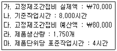
- ￦20,000(불리)
- ￦10,000(유리)
- ￦10,000(불리)
- ￦0
(정답률: 알수없음)
37. (주)한강의 변동비율은 60％이며 연간 고정비는 ￦12,000,000 이다. (주)한강의 월간 손익분기점매출액은 얼마인가?
- ￦1,666,667
- ￦2,500,000
- ￦20,000,000
- ￦30,000,000
(정답률: 알수없음)
38. 손익분기점 매출액은 ￦250,000이며, 고정비는 ￦50,000이다. 다음 각 항목에 대하여 계산한 내용 중 옳지 않은 것은?
- 공헌이익률은 20％이다.
- 단위당 변동비가 ￦10이라면 단위당 판매가격은 ￦12.5이다.
- 총 30,000단위가 판매(단위당 판매가격 ￦12.5 가정)되었을 때 안전한계는 ￦125,000이다.
- 매출액이 ￦400,000일 경우 안전한계율은 40％이다.
(정답률: 알수없음)
39. 단일제품을 생산하고 있다. 단위당 판매가격은 ￦250이고 단위당 변동비는 ￦200이며, 고정비 총액은 ￦30,000이다. 옳지 않은 것은?
- 손익분기점 매출량은 600개이다.
- 만약 고정비만 ￦30,000에서 ￦35,000으로 증가하였다면, 새로운 손익분기점 매출량은 700개이다.
- 만약 단위당 변동비만 ￦200에서 ￦210으로 증가하였다면, 새로운 손익분기점 매출액은 ￦187,500이다.
- 법인세차감전 목표이익을 ￦2,400이라고 할 경우, 달성해야 하는 매출액은 ￦150,000이다.
(정답률: 알수없음)
40. CVP분석을 위해서는 분석의 편의를 위하여 몇 가지 가정이 필요 하다. 다음 중 옳지 않은 것은?
- 조업도는 독립변수인 원가와 수익에 의해서 결정된다고 가정한다.
- 수익과 원가의 행태는 결정되어 있고 관련범위 내에서 선형 이라고 가정한다.
- 생산량과 판매량은 일치하는 것으로 가정한다.
- 분석기간이 화폐의 시간가치가 중요하지 않을 정도의 단기간 이라고 가정한다.
(정답률: 알수없음)
3과목: 세무회계
41. 소득세법상 비거주자의 소득세 과세방법 중 분리과세에 대한 설명으로 옳지 않은 것은?
- 비거주자의 국내원천소득도 분리과세 대상이 되는 소득이 있다.
- 비거주자의 국내원천소득도 종합과세 대상이 되는 소득이 있다.
- 국내에서 인적용역을 제공함으로 인하여 발생한 소득이 있는 비거주자가 종합소득과세표준을 확정 신고하는 경우에는 부동산소득 등 모든 국내원천소득에 대하여 종합과세할 수 있다.
- 국내사업장이 있는 비거주자의 퇴직소득에 대한 소득세는 거주자와 같은 방법으로 분류하여 과세한다.
(정답률: 알수없음)
42. 다음 소득 중 원천징수세율이 가장 큰 소득에 해당하는 것은?
- 일용근로를 제공하고 받는 소득
- 고용관계 없이 다수에게 강연하고 받은 강연료 소득
- 세금우대종합저축에 가입하고 받은 이자소득
- 봉사료로 지급받은 소득
(정답률: 알수없음)
43. 소득세법에 대한 설명 중 옳지 않은 것은?
- 상속인이 피상속인의 소득금액에 대한 소득세 납세의무를 지며, 피상속인의 소득세와 상속인의 소득세를 구분하여 세액을 계산한다.
- 거주자가 사업을 영위하다가 6월 30일에 폐업한 경우 소득세의 과세기간은 1월 1일부터 6월 30일까지이다.
- 거주자의 소득세 납세지는 그 주소지로 한다. 다만, 주소지가 없는 경우에는 그 거소지로 한다.
- 비거주자가 납세관리인을 둔 경우 그 비거주자의 소득세 납세지는 그 국내사업장의 소재지 또는 그 납세관리인의 주소지나 거소지 중 납세관리인이 그 관할세무서장에게 납세지로서 신고하는 장소로 한다.
(정답률: 알수없음)
44. 근로자인 김부자씨의 2014년 근로소득금액을 계산하면 얼마인가?
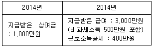
- 4,000만원
- 3,600만원
- 3,500만원
- 3,100만원
(정답률: 알수없음)
45. 시내 출장비의 과세여부에 대한 설명 중 적절하지 않은 것은?
- 시내출장비를 실비정산하여 지급하는 대신 자가운전보조금을월 20만원 이내로 지급한바 비과세 대상 근로소득으로 한다.
- 홀수 달에는 자가운전보조금을 30만원 지급하고 짝수 달에는 10만원만 지급한 경우, 연말정산을 통해 소득세를 산출하므로 연간 자가운전보조금이 240만원을 초과하지 않으면 전체 금액이 비과세대상 근로소득이 된다.
- 시내출장비를 실비정산하여 지급한바 전액 비과세 근로 소득으로 한다.
- 시내출장비를 실비정산하여 지급하는 동시에 자가운전보조 금을 지급한바, 실비정산한 시내출장비는 비과세 근로소득으로 한다.
(정답률: 알수없음)
46. 다음 소득에 대한 원천징수세액(지방소득세 제외)의 합계액은 얼마인가?
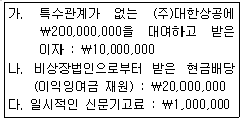
- ￦4,240,000
- ￦5,340,000
- ￦5,500,000
- ￦31,000,000
(정답률: 알수없음)
47. 근로소득에 대한 설명으로 옳은 것은?
- 근로의 대가로 받는 것이면 급여·수당 등의 명칭에 불구하고 근로소득이다.
- 실비변상적인 정도의 일직료, 숙직료라도 근로소득으로 과세한다.
- 근로자가 천재지변, 기타 재해로 인하여 받는 급여는 과세 이다.
- 월 20만원 이내의 자가운전 보조금은 실제여비를 지급받는 것과 상관없이 비과세이다.
(정답률: 알수없음)
48. 다음의 설명 중 옳지 않은 것은?
- 종합소득산출세액은 종합소득과세표준에 기본세율을 적용 하여 계산한다.
- 총결정세액에서 중간예납세액, 원천징수세액, 예정신고납부 세액, 수시부과세액을 기납부세액으로 차감하여 차감납부할 세액을 계산한다.
- 세액공제는 산출세액에서 일정액을 공제해주는 제도로 소득 세법상의 세액공제와 조세특례제한법상의 세액공제가 있다.
- 세액공제의 경우 세액공제액이 종합소득산출세액을 초과 하는 경우 다음 과세기간에 이월하여 공제해 주는 것이 원칙이다.
(정답률: 알수없음)
49. 다음은 거주자 A씨와 배우자 및 생계를 같이하는 부양가족의 현황이다. A씨의 2015년도 종합소득공제 중 인적공제액을 계산하면 얼마인가? (단, 부양가족은 별도의 소득이 없다.)
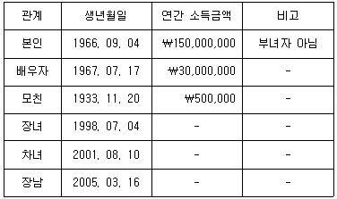
- ￦8,500,000
- ￦9,000,000
- ￦9,500,000
- ￦10,000,000
(정답률: 알수없음)
50. 소득세법상 소액부징수의 내용으로 옳지 않은 것은?
- 원천징수세액이 1천원 미만인 경우
- 납세조합의 징수세액이 1천원 미만인 경우
- 중간예납세액이 30만원 미만인 경우
- 수입금액이 20만원 미만인 경우
(정답률: 알수없음)
51. 부가가치세에 대한 설명 중 옳지 않은 것은?
- 사업목적이 영리이든 비영리이든 관계없이 사업상 독립적으로 재화 또는 용역을 공급하는 자는 부가가치세 납세 의무자에 해당한다.
- 국가나 지방자치단체는 부가가치세법상 납세의무자에 해당 하지 아니한다.
- 판매시설을 구비한 직매장은 사업장에 해당한다.
- 사업자등록 정정사유가 발생한 사업자는 지체 없이 정정신고 하여야 한다.
(정답률: 알수없음)
52. 부가가치세 과세기간에 대한 설명 중 옳지 않은 것은?
- 일반과세자, 간이과세자 여부와는 무관하게 역법에 의하여 1년을 제1기(1월1일부터 6월30일까지)와 제2기(7월1일부터 12월31일까지)로 나누어 과세기간을 적용한다.
- 사업을 폐업하는 경우의 과세기간은 폐업일이 속하는 과세 기간의 개시일로부터 폐업일까지로 하되, 폐업일이 명백하지 않은 경우 폐업신고서의 접수일까지로 한다.
- 신규로 사업을 개시하는 자의 최초의 과세기간은 사업개시일 부터 그날이 속하는 과세기간의 종료일까지로 한다.
- 간이과세를 포기하여 일반과세자로 전환되는 사업자는 간이 과세포기의 신고일이 속하는 과세기간의 개시일로부터 그 신고일이 속하는 달의 말일까지의 기간(간이과세자)과 그 신고일이 속하는 달의 다음달 1일부터 당해 신고일이 속하는 과세기간의 종료일까지의 기간(일반과세자)을 각각 1과세 기간으로 한다.
(정답률: 알수없음)
53. 부가가치세법상 재화나 용역의 공급시기로 옳지 않은 것은?
- 장기할부판매의 경우 - 대가의 각 부분을 받기로 한 때
- 현금판매의 경우 - 재화가 인도되거나 이용가능하게 되는 때
- 재화의 공급으로 보는 가공의 경우 - 가공이 완료되는 때
- 폐업 전에 공급한 용역의 공급시기가 폐업일 이후에 도래 하는 경우 - 폐업일
(정답률: 알수없음)
54. 거래장소란 우리나라의 과세권이 미치는 과세거래의 범위를 판별하기 위한 기준이 된다. 우리나라의 과세거래에 해당하는지 여부에 대한 설명으로 옳지 않은 것은?
- 홍길동씨가 미국에서 우리나라 국적의 항공기를 탑승하고 귀국한 경우, 이 거래는 국외에서 발생한 거래이므로 부가 가치세 과세대상이 아니다.
- 중국에서 재화를 수입하는 경우, 재화를 수출한 중국의 사업자는 부가가치세 납세의무가 없다.
- 사업장소재지가 국내인 법인이 국외에서 건설용역을 제공한 경우, 부가가치세 과세대상이다.
- 사업장소재지가 국외인 법인이 국내에서 부동산임대용역을 제공하고 대가를 외국에서 받는 경우, 부가가치세 과세대상 이다.
(정답률: 알수없음)
55. 부가가치세의 면세제도에 대한 설명 중 옳지 않은 것은?
- 면세제도는 기초생활필수품 등에 대하여 부가가치세를 면제 하여 줌으로써 세부담의 역진성을 완화하려는 제도이다.
- 도서에 부수하여 그 도서의 내용을 담은 비디오테이프를 같이 공급하는 경우 비디오테이프는 도서에 포함하는 것으로 하여 면세된다.
- 면세대상이 되는 재화는 생산단계 뿐만 아니라 유통단계에 서도 모두 면세된다.
- 면세를 포기하고자 하는 사업자는 관할 세무서장의 승인을 얻어야 한다.
(정답률: 알수없음)
56. 세금계산서에 대한 내용으로 옳은 것은?
- 전자세금계산서를 발급하였을 때에는 전자세금계산서 작성 월의 익월 15일까지 세금계산서 발급명세를 국세청장에게 전송하여야 한다.
- 법인과 직전연도 사업장별 공급가액 합계액이 3억 원 이상인 개인사업자는 반드시 전자세금계산서를 발급해야하므로 전자세금계산서 이외의 세금계산서를 발급한 경우 3％의 가산세가 적용된다.
- 전자세금계산서 발급의무가 있는 개인사업자가 전자세금 계산서를 발급하고 세금계산서 발급명세를 국세청장에게 전송하지 않은 경우 공급가액의 0.3％의 가산세를 적용한다.
- 전자세금계산서 발급세액공제를 적용받으려는 개인사업자는 전자세금계산서 발급세액공제신고서를 확정신고시만 제출할 수 있다.
(정답률: 알수없음)
57. 다음은 출판업 및 부동산임대업을 영위하는 (주)상공의 2015년 제1기 부가가치세 계산을 위한 자료이다. 2015년 제1기의 부가 가치세 과세표준을 계산하면 얼마인가?
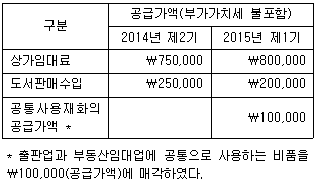
- ￦800,000
- ￦875,000
- ￦880,000
- ￦900,000
(정답률: 알수없음)
58. 일반과세자인 김갑동씨가 2015년 제2기 부가가치세 확정신고 시 차감납부할 세액은 얼마인가? (단, 전자신고세액공제는 고려하지 아니한다.)
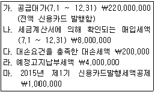
- ￦4,740,000
- ￦4,940,000
- ￦5,200,000
- ￦9,200,000
(정답률: 알수없음)
59. 간이과세제도에 대한 설명으로 옳지 않은 것은?
- 간이과세자도 영세율을 적용받을 수 있다.
- 해당 과세기간의 공급대가가 2,400만원 미만인 간이과세자는 원칙적으로 납부의무를 면제한다.
- 간이과세자는 영수증을 발행하여야 하나, 거래 상대방의 요청이 있는 경우에는 세금계산서도 교부할 수 있다.
- 간이과세자는 대손세액공제를 받을 수 없다.
(정답률: 알수없음)
60. 간이과세자가 될 수 있는 경우로 옳은 것은?
- 직전연도 공급대가가 1억인 사업장을 가진 개인사업자 김갑동씨
- 직전연도 공급대가가 5천만 원인 부동산매매업자인 박을동씨
- 직전연도 공급대가가 3천만 원인 (주)양지
- 직전연도 공급대가가 4천만 원인 문구점을 운영하는 양만이씨
(정답률: 알수없음)